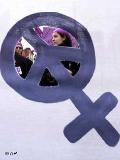

پذيرش > سایت نوشته ها > شجاع، جوان، باتجربه • جنبش زنان و کمپین یک میلیون امضا از هشت مارس سال گذشته تا (...)


 شجاع، جوان، باتجربه • جنبش زنان و کمپین یک میلیون امضا از هشت مارس سال گذشته تا امسال/دويچه وله شجاع، جوان، باتجربه • جنبش زنان و کمپین یک میلیون امضا از هشت مارس سال گذشته تا امسال/دويچه وله
17 اسفند 1386 - - نسخه قابل چاپ
فعالان زن میگویند: سال سختی بود، اما به نگاه و روش هایی جدید رسیدیم. سختگیریهایی که به زنان شد، به خاطر ترس از این بلوغ و توان جنبش زنان بود. نگاهی به تجربه جنبش زنان و کمپین یک میلیون امضا در این سال، به مناسبت فرا رسیدن روز جهانی زن.
هشت مارس سال گذشته ۳۳ نفر از فعالان زن بازداشت شدند. چیزی که همه را متعجب کرد. ولی این تازه اول کار بود. در سالی که روزهای آخرش سپری میشود، دستگیری، زندان، و تهدید و خشونت نسبت به زنان بیسابقه بود. سالی که فعالان زن را با این پرسش روبرو کرد: از این به بعد چگونه باید حرکت کرد؟ سال گذشته از این رو سال مهمی بود.
افقی، گسترده، چهره به چهره
فشار بر جنبش زنان، فشار بر فعالیت های مدنی و تعطیلی سازمانهای غیردولتی نیز بود. NGO هایی که توانمندسازی زنان یا حمایت از زنان در برابر قوانین تبعیضآمیز را برنامه فعالیت خود کرده بودند، از پا درآمدند. "مرکز کارورزی"، موسسهی "راهی" و نهادهای دیگر یا به اتهام فعالیت علیه امنیت کشور تعطیل شدند یا به بهانههای "قانونی" اجازهی کار به آنها داده نشد.
پیامد تعطیلی سازمانهای زنان و فعالیتهای مدنی این بود که فضاهای عمومی هم یا از بین رفتند یا بسیار محدود شدند. دیگر به زنان جایی نمیدادند تا در آن گرد هم آیند. در فرهنگسراها و سالنها برروی زنان بسته ماند. پروژه های توانمندسازی زنان آب رفتند. محدودیتها به همراه تهدیدها و فشارها رسیدن به شیوهها و روشهای جدیدی را ایجاب میکرد. محبوبهی عباسقلی زاده روزنامه نگار و فعال زنان میگوید:
«همه اینها باعث شد که فعالان جنبش به نحوی سعنی کنند فضاهای عمومی را جور دیگری بازتعریف کنند. در واقع میخواهم بگویم همه این فشارهایی که روی ما بود باعث شد آن – مثلاً - استراتژیهای ما به نوع دیگری بازسازی بشود، یکنوع دیگری سازماندهیمان بازسازی بشود، یکنوع دیگری نگاه بکنیم به دسترسیهایمان به مسایل مختلف.»
کمپین یک میلیون امضا، یعنی فراگیرترین حرکت زنان ایران بدون روشی متفاوت از آنچه در گذشته در جنبش زنان تجربه شده بود، امکان همهگیر شدن و ادامه حرکت نداشت. نوشین احمدی خراسانی آنرا جنبش عصر جدید ایران نامیده است. او در کتابش "کمپین یک میلیون امضا: روایتی از درون" مینویسد «مدل کمپین، مدلی "خواسته محور" است.» هرکس خواسته های کمپین را قبول داشته باشد، میتواند عضو داوطلب آن باشد. در کمپین نه سلسله مراتب وجود دارد، نه سازماندهی هرمی: «بنابراین هرکسی میتواند در حد توان خود، فقط به اندازه یک برگه امضاء یا صدها برگه، امضا جمع کند یا در کمیته ها و گروه ها به فعالیت بپردازد. ولی نقطه قوت کمپین آن است که همه این کارهای کوچک با توجه به بیانیهای واحد و به منظور هدفی واحد گردهم میآید و به حرکتی بزرگ تبدیل میشود.»
او درجای دیگر مینویسد که کنشگران کمپین به ناگزیر به «سیاست های عملگرایانه» رو آوردهاند. به روش «گفتگوی چهره به چهره با مردم»، که «روش و حرکتی نوین در بافت جنبش زنان، یعنی آموزش و گفتگو با هدف کنش در جهت تغییر اجتماعی است دست یافته اند.»
خدیجه مقدم از دیگر پایه گذران کمپین میگوید کمپین بدلیل همین افقی بودن جای خود را در جامعه باز کرده است:
«کمپین خیلی رشد کرده. روشهای کمپین میتواند تغییر کنند، چون کمپین ایستا نیست. سازمان نیست، رهبری ندارد، سر ندارد. برای همین این حرکت میتواند به شکلهای مختلفی پیش برود. یعنی اگر همین الان بگویند که جمعآوری امضا جرم است، و این حرکت ادامه پیدا نکند، نمیشود جلوی حرکت کمپین را گرفت. برای اینکه هزاران نفر الان دارند این حرکت را پیش میبرند. یکی کسی دوست دارد برود توی خیابان با مردمی که نمیشناسد، یا در خانههای مردم را بزند و راجع قوانین تبعیضآمیز صحبت بکند و از تاثیر این قوانین در زندگی زنان بگوید. یکی دوست دارد برود با نمایندگان مجلس وارد مذاکره بشود. یکی هم دوست دارد برود توی ورزشگاهها. بهرحال روش روش آموزش چهره به چهره است، و جمعآوری یک میلیون امضا."
گفتمان، ارتباط، لابی
آزار زنان تنها دستگیری، زندان و تعطیل کردن سازمانهای آنها نبود. در سالی که روزهای آخرش را میگذرانیم لایحهی "حمایت از خانواده" مطرح شد که حتی صدای اعتراض زنان اصولگرای مجلس را هم بلند کرد. زنان آنرا لایحه هوسبازی های مردانه و "لایحه تزلزل خانواده" نامیدند. سهمیهبندی جنسیتی دانشگاهها علنا اعلام و انجام شد، مجوز انتشار مجله زنان پس از شانزده سال گرفته شد. و طرح امنیت اجتماعی حیثیت انسانی زنان، بخصوص دختران جوان را در خیابانها و اماکن عمومی به بازی گرفت. این ها جمع مسایل زنان را مسئله همه زنان کرد! محبوبه عباسقلی زاده میگوید:
«استراتژی دیگری که به نظر من اتفاق افتاده این هست که همهی این گروهها امسال سعی کردهاند که به لحاظ گفتمانی هم حتا بتوانند مواضع و نگاه خودشان را نسبت به حوادثی که دارد علیه زنان اتفاق میافتد، واقعگراتر بکنند و بتوانند در مورد همهی این اتفاقات فکر کنند. هرگروه سعی کرد ببیند که موضعاش در مورد طرح امنیت اجتماعی چیست، در مورد سهمیهبندی و لایحه خانواده و چند همسری و همین مسایلی که امسال اتفاق افتاده، اعدامها و غیره، بالاخره چه موضعی دارد، و همه اینها کمک کرد به اینکه گفتمانهای موجود در گروههای مختلف در حقیقت شکل بگیرد و اگر شما به سایتهای اینها مراجعه بکنید، میبینید که چه گفتوگوهای مهمی دارد اتفاق میافتد.»
خدیجه مقدم میگوید ما نتوانستیم هیچوقت یک ارتباط تنگاتنگ با گروههای دیگر به وجود بیاوریم. با وجود آنکه ضرورتش را لمس میکنیم. اما در این زمینه هم گامهایی برداشتهایم:
«در ارتباط با قوانین تبعیضآمیز، دوستان روزنامهنگار ما مرتب با نمایندههای مجلس و با کسانی که در دولت هستند راجع به کمپین صحبت میکنند. حتا خودشان از مجلس اعلام کرده بودند که فعالین حقوق زنان بیایند با ما صحبت کنند، بیایند با ما وارد گفتوگو بشوند که ببینیم چه کار میتوانیم بکنیم. منتها بحث سر این است که میان حرف و عمل همیشه فاصلهای وجود دارد. من خودم مخالف "لابی" نیستم. با نمایندگان مجلس و با قوه قضاییه برای جلوگیری از اعدام کودکانی که زیر ۱۸ سال مرتکب جرم شدهاند "لابی" کردهام.»
خدیجه مقدم به فعالان در کمپین اشاره میکند که میتوانند حتا در حوزهی علمیه بنشینند، بحث کنند، و قوانین را بهروز کنند، و نیز به زنان "اصلاح طلب":
"با زنان اصلاحطلب ما نشستی داشتیم که همهشان با کمپین موافق هستند، حتا بعضیهاشان خودشان فرم میگیرند و امضا جمع میکنند. منتها خب همیشه آنها روش کارشان با ما فرق دارد و معمولا با چراغ خاموش حرکت میکنند."
جوان، باهویت، آگاه
جنبش زنان جوانتر شده و این تحول "قدیمیترها" را هم آموزش میدهد. بیشتر دوندگی ها برای کمپین یک میلیون امضا دوندگی را دخترهای جوان میکنند. خدیجه مقدم در این مورد میگوید:
«درست است که ما سه نسل در کمپین داریم فعالیت میکنیم، مادران ما، ما و دخترانمان. واقعا سه نسل با جان و دل داریم در کنارهم فعالیت میکنیم. ولی واقعا بار اصلی کمپین ازابتدا بر دوش جوانان بوده. شاید ما فقط توانستهایم تجربههایمان را در اختیارشان قرار بدهیم، یا امکاناتمان را در اختیارشان قرار بدهیم. وگرنه این جوانها بودند که کمپین را به اینجا رساندهاند. و من خیلی خوشحالم که الان پروین اردلان جایزهی اولاف پالمه را میبرد و او در واقع نمایندهی یک نسل است، نسلی که تلاش کرده است.»
تفاوت نیروی جوان کمپین با نسلی که پس از انقلاب یا قبل از آن فعال بود زیاد است. نسلی قدیم جنبش زنان بیش از آنکه به خواستهای خودش، خودش به عنوان یک زن بها دهد، متعلق به سازمانش، گروهش، اهداف انقلابش بود. مبارزه با "امپریالیسم" برایش اهمیت بیشتری داشت. حواسش بیشتر به آرمانهای گروهی و ایدئولوژیک بود تا مطالبات زنان. خودش، هویت اش، زن بودنش را کنار گذاشته بود تا به مسایل "مهمتر" بپردازد.
نوشین احمدی خراسانی در کتاب ""کمپین یک میلیون امضا: روایتی از درون" مینویسد: «مرسوم بوده وهست که سازمانها، احزاب، جمعیتها و انجمنها و گروههای مختلف مردمی براساس مشربهای عقیدتی به گرد هم جمع شوند وبه فعالیت بپردازند. همبستگی برمبنای ایدئولوژی و افکار و عقاید (چه مذهبی، یا سوسیالیستی، فمینیستی و ...) مدلی است دارای قدمت و ریشه های عمیق تاریخی که در جنبش زنان نیز مرسوم بوده است.
اما در جنبش یک میلیون امضا، گروه ها و افرادی گردهم آمدند، که این بار براساس توافق های عقیدتی و ایدئولوژیک قرار نداشت، بلکه برپایه توافقی "خاص" و معین یعنی بر مبنای یک "خواسته" (حقوق برابر) شکل گرفت.»
خدیجه مقدم در رابطه با همین موضع میگوید:
«ما هویت فردی خودمان را فراموش کردیم و برای آن هویت جمعی فقط فعالیت کردیم. نسل بعد از ما به ما یاد داد که نه، ما باید همیشه خواستههای خودمان را به صورت مستقل هم بخواهیم و من از آنها خیلی آموختهام. خوشحالم و از این بابت افتخار میکنم که این جوانها حتا پایههای تئوریک این مسایل را مطرح کردند و ما قبول کردیم و داریم کنارشان کار میکنیم. و نسلی که از آنها جوانتر است، یعنی میتوانم بگویم سال ۶۰ به بعد، اینها الان به کمپین پیوستهاند نظرات خیلی خوبی دارند. خودشان دارند کار میکنند، خودشان دارند تو گروههای مختلف، با ایدههای خیلی خوب و با خلاقیت بسیار دارند کمپین را پیش میبرند. و این اصلا اجتنابناپذیر است، برای اینکه دوسوم جمعیت ما در ایران جوانها هستند. و خوشبختانه جوانهایی هم که الان توی این فضا قرار گرفتهاند و درکمپین دارند فعالیت میکنند، بسیار آگاهند. و میبینیم که هرچقدر هم محدودشان میکنند، نمیترسند. میدانند که چه میخواهند و بازیچهی دست هیچکسی نمیشوند. چون راهشان بسیار مسالمتآمیز و به حق است. من به روشنی میبینم که قوانین تبعیضآمیز و تاثیرش روی زندگی زنان چقدر عمومی شده است."
زنانه، مردانه، مسالمت آمیز
به نظر محبوبه عباسقلی زاده جنبش زنان به طرف جوانترشدن میرود، و این ویژگی را نیز دارد که فضایی ایجاد کرده که زن و مرد باهم برای حقوق زن تلاش کنند. او میگوید:
« برخلاف کشورهای دیگری که معمولا موضوعات جنبش زنان و بحثهای فمینیستی را فقط منحصر به زنها و عموما هم میانسالها هستند، در ایران اتفاقی که امسال افتاد این هست که تعداد جوانها چه دختر و چه پسر در کلیهی گروههایی که توی جنبش زنان هستند افزایش بیشتری پیدا کرده.»
ونسرین ستوده وکیل مدافع فعالان زن معقتد است که جنبش زنان هم بلوغ فکری قابل ملاحظه ای رسیده، و هم یاد گرفته که روشی کاملا مسالمت آمیز در پیش گیرد. او میگوید:
«این جنبش نه تنها تمام خواستههایش برایش روشن و واضح شد، بلکه توانست آنها را اعلام بکند و سپس در سال گذشته روش خودش را هم اعلام کرد، روشی کاملا قانونمند را در پیش گرفت که میخواهد با جمعآوری یک میلیون امضا با خواستهی برابری آن را به مجلس ارائه بدهد و تقاضای تغییر قوانین را به نفع زنان بکند. در همین رابطه جا دارد که بگویم که جناح تندروی حکومت بسیار بسیار مایل است که این پردهی قانونی از دست فعالان جنبشهای مختلف گرفته بشود.
ما از روشهایی استفاده میکنیم که به موجب قوانین ایران جرم محسوب نمیشود. در مقابل یکسال و نیم فشاری که بر جنبش زنان وارد شد، نهایتا در هفتهی گذشته معاونت قوه قضاییه اعلام کرد که جمعآوری امضا خودبخود جرم نیست و این گام بزرگی برای جنبش زنان محسوب میشود. چرا؟ ما در یکسال و نیم گذشته بسیار بازداشت داشتیم، خانمها و یا آقایانی که در حال جمعآوری امضا بودند. بهرحال حاکمیت هم تا کجا میتواند مگر به یک عمل قانونی برچسب غیرقانونی بودن بزند. بنابراین جنبش به جایی رسیده است که افکارعمومی حاکمیت را مورد سوال قرار میدهد که آیا این عمل غیرقانونیست؟ و اگر نیست، چرا باید اینهمه زندان، اینهم شلاق پشت سر خودش داشته باشد؟»
مریم انصاری
منبع :دويچه وله
ارسال به
بالاترین
،
توییتر
،
فریندفید
،
فیسبوک
در همين بخش :
 یک خبر تلخ؟ یک قانونشکنی؟ یک تصمیم بخشنامهای جدید؟ یک خبر تلخ؟ یک قانونشکنی؟ یک تصمیم بخشنامهای جدید؟
چرا بایست به سکسوالیته پرداخت؟ / نفیسه آزاد
آزارجنسی خانگی؛ «قربانی» نه، «نجات یافته»
زنان، بزرگترین بازندگان بهار عرب
سانسور از دیدگاه جنسیتی/الهه امانی
ديگر بخش ها :
طرح یک میلیون امضا
|
مقالات
|
سایت نوشته ها
|
اخبار
|
گزارش كمپين
|
گفت و گو
|
علیه سکوت
|
كوچه به كوچه
|
نامه های شما
|
گزارش ویژه
|
گفتگو با اعضا
|
ویژه سالگرد کمپین
|
تصویر برابری
|
دل آرام علی
|
تریبون
|
مقالات
|
تاریخ شفاهی
|
خارج از چارچوب
|
کتابخانه
|
درباره کمپین
|
کمپین در شهرها
|
کمپین در بند
|
صدای تغییر
|
ویژه 22 خرداد
|
لایحه حمایت از خانواده
|
گالری
|
عشا مومنی
|
امیر یعقوبعلی
|
خدیجه مقدم
|
راحله عسگری زاده و نسیم خسروی
|
پروین اردلان،جلوه جواهری، مریم حسین خواه، ناهید کشاورز
|
زینب پیغمبرزاده
|
سعیده امین، سارا ایمانیان، محبوبه حسین زاده، ناهید کشاورز و همایون نامی
|
احترام شادفر
|
نسیم سرابندی زاده،فاطمه دهدشتی
|
وبلاگ مهمان
|
پرونده خرم آباد
|
دستگیری ها
|
مریم مالک
|
پرستو اللهیاری
|
مهرنوش اعتمادی
|
سمیه رشیدی
|
Other Languages
|
همراهان
|
«فراخوان کمپین ده روز با بهاره هدایت»
| English
|